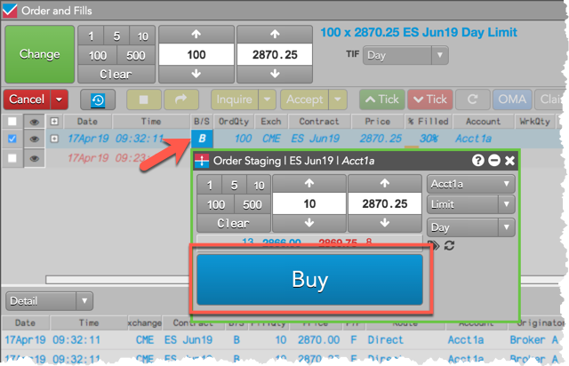
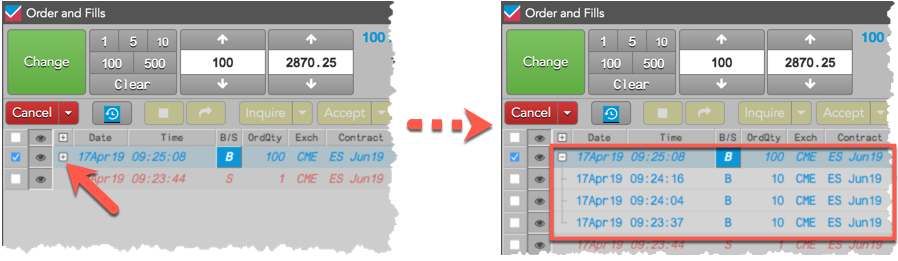

The owner who claimed the care order can enter related child orders to fill the parent order. Child orders are sent to the exchange based on the total quantity, price and position of the parent care order, and can be submitted in the same account or different accounts.
Child orders can be submitted simultaneously or at different times, allowing the staged order to be worked based on market conditions. The owner can submit child orders using TT order types in addition to the natively supported order types and TIFs. Native order types and TIFs vary by exchange.
When submitting a child order for a claimed care order, the owner cannot:
To submit related child orders:
Click the B (Buy) or S (Sell) button in the B/S column for the care order.
The Order Ticket opens seeded with the care order details, and shows either the Buy or Sell button based on whether the parent order is a Buy or a Sell order.

If using an order profile, the account configured in the profile will be used to submit the order. This can be a different account or the same account as the originator.
All native exchange order types and TT synthetic order types are supported when submitting a child order.
Click the single BUY or SELL button in the Order Ticket to submit the child order to the exchange.
Tip: Click the expander (+) in the working care order row in the Order Book to show all working or filled child orders, as well as show fills assigned to the parent order.
